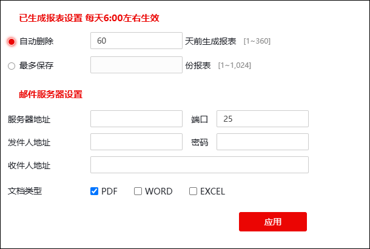

报表配置管理模块可管理NGFW报表相关的配置项。
| 步骤1 | 选择 ，界面如下图所示。 |

各项参数的具体说明如下表所示。
参数 |
说明 |
|
|---|---|---|
已生成报表设置（每天6:00左右生效） |
自动删除 |
设置系统自动删除多少天之前生成的报表。自动删除天数不得超过360天。 |
最多保存 |
设置最多保存的报表份数。当报表份数超过1024，自动删除最早生成的报表，保存新报表。 |
|
邮件服务器设置 |
服务器地址 |
设置邮件服务器的IP地址。 |
端口 |
设置邮件服务器的服务端口号，取值范围：1-65535。 |
|
发件人地址 |
设置发件人的邮箱地址，例如：zhang_san@topsec.com.cn。 |
|
密码 |
设置发送人邮箱对应的密码。 |
|
收件人地址 |
设置收件人地址。多个接收邮件以“|”号分隔，收件人个数不超过6个。 |
|
文档类型 |
设置发送报表的类型。可选项：PDF/WORD/EXCEL。 |
|
| 步骤2 | 参数设置完成后，点击【应用】按钮完成配置。 |